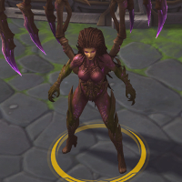
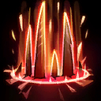
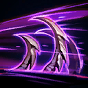
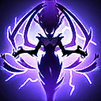
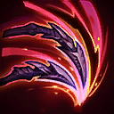
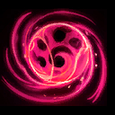
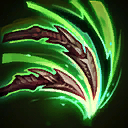
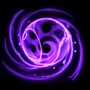

Kerrigan
Welcome to our Kerrigan guide for Heroes of the Storm. Here you will learn everything you need to know in order to play Kerrigan in a competitive environment, whether you play on your own or with a team.
Pure Damage Build
| Level 1 | Level 4 | Level 7 | Level 10 | Level 13 | Level 16 | Level 20 |
|---|---|---|---|---|---|---|
|  |  |  |
 |  |  |  |
As the name implies, the Pure Damage Build favors Talent options that give Kerrigan the most damage output possible (aside from Bolt of the Storm Icon Bolt of the Storm at Level 20, which is often just too good to pass up). This build is recommended when Kerrigan's highest priority is bursting down a specific target, such as an assassin, specialist, or support. In order to effectively utilize this build, Kerrigan must have an ally that will be able to prevent her from being immediately killed from focus-fire after engaging the enemy, such as Tyrael, Uther, or Medivh. This build revolves around a high-risk, high-reward playstyle and should not be used against enemies that will likewise be able to prevent an ally from being immediately picked off by Kerrigan.
Ravage Build
| Level 1 | Level 4 | Level 7 | Level 10 | Level 13 | Level 16 | Level 20 |
|---|---|---|---|---|---|---|
|  | |
 | |
The Ravage Build is comprised of Talents that provide Kerrigan a well-rounded balance of damage mitigation and utility. Siphoning Impact Icon Siphoning Impact and Clean Kill Icon Clean Kill give Kerrigan a large amount of self-sustain and staying power, particularly during the early and mid-game. Eviscerate Icon Eviscerate and Bolt of the Storm Icon Bolt of the Storm vastly improve Kerrigan's mobility and allow her to more easily stick to her team's target of focus fire. Aggressive Defense Icon Aggressive Defense will help Kerrigan survive the initial burst damage she will sustain after diving into the enemy team with Ravage.
Go Back